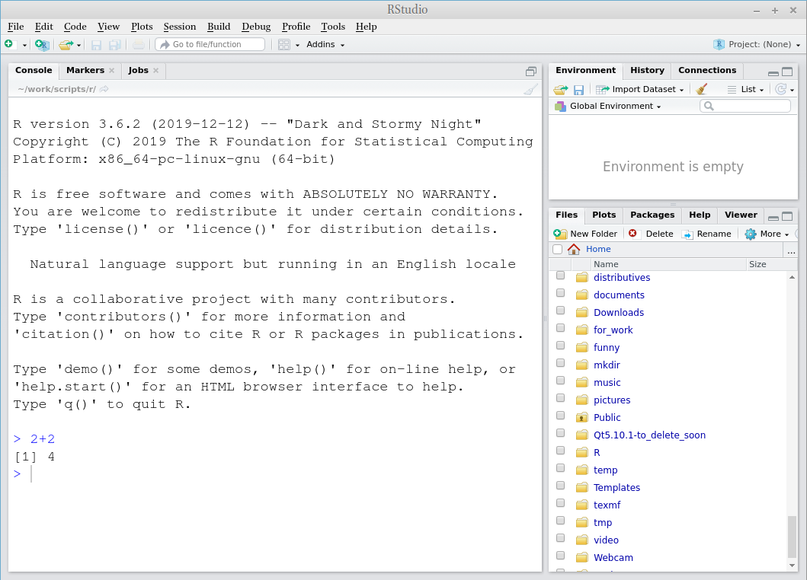

Основы анализа данных
2020-2021
1 Требования
Чтобы работать в классе, необходимо установить следующие программы:
- R можно найти здесь: https://cloud.r-project.org/;
- RStudio можно найти здесь: https://rstudio.com/products/rstudio/download/#download (бесплатную версию!);
- после установки откройте RStudio и наберите 2+2.

Если Вы видите что-то такое, значит все хорошо.
Пройдите на сайт https://rstudio.cloud/ и зарегестрируйтесь. Это опционально, но если у Вас что-то не будет работать на Вашем компьютере, можно воспользоваться этой опцией.
Еще один вариант, позволяющий ничего не устонавливать – это использовать Google Colaboratory (по этой ссылке)
Можно не посещать занятия и не делать домашние задания если Вы пройдете следующие онлайн курсы:
Если Вы хотите пройти какие-то другие курсы на datacamp (не обязательно связанные с R), можете написать мне, я добавлю Вас в группу, которая позовляет проходить курсы бесплатно.
1.1 Домашние работы
- домашняя работа 1
- домашняя работа 2
- домашняя работа 3